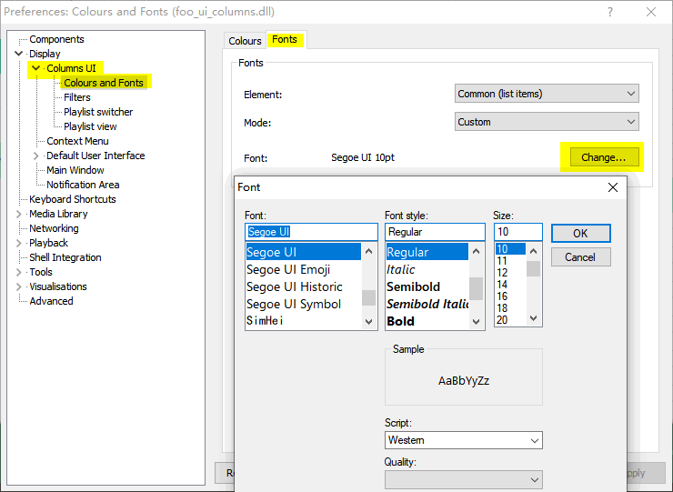
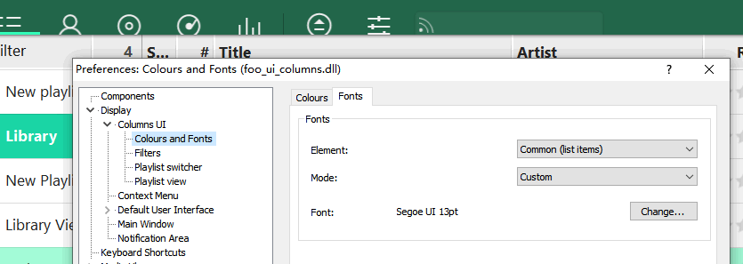
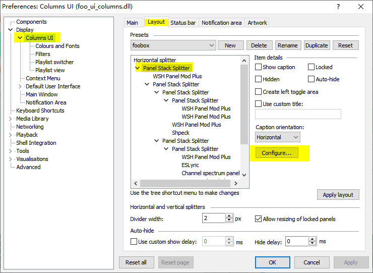
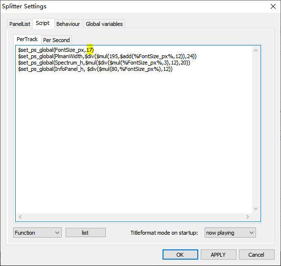
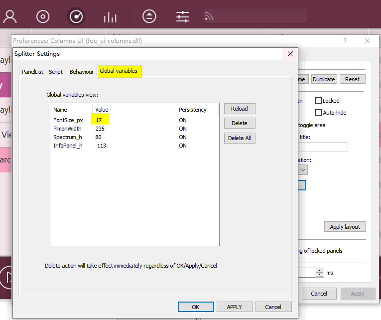

Adapt to high DPI display
As you change font size in CUI preferences setting in foobar2000, the sizes of the UI elements on foobox panels will change accordingly. But due to the limitation of CUI + Panel Stack Splitter (PSS), the sizes of the panels themselves will not change. The sizes of the panels are controled by PSS, and foobox has set-up a global variable for the panel sizing but you have to revise this variable manully according to the font-size you have selected.
This variable is just the value of font-size you have chosen， the unit is pixel, px. But in Windows font dialog we choose font-size by the unit of font weight, pt. So, we have to know the relationship between px and pt.
| pt (point): | desktop publishing point (DTP point), defined as 1⁄72 inch (0.35 mm). Normally in the font dialogs of Windows, the font unit is "pt". |
| px (pixel): | We can simpely learn that in a 96 DPI screen (Windows default), 1px = roughly 1⁄96 inch (0.26 mm). So px is DPI (dots per inch) related, not a fixed physical size. |
From above, we can conclude conversion of pt and px by below formula:
pt = px * 72 / dpi
If in Windows the zoom vaule is not 100% (in high resolution screen, you may set it to 150%, 200% etc), then DPI is not 96 any more, zoom value is to be considered in the conversion:
pt = (px * 72 / 96) / zoom = (px * 3 / 4) / zoom
px = (pt * 96 / 72) * zoom = (pt * 4 / 3) * zoom
Here we need to obtain px value from pt value, below table can avoid calculation, you can take the value directly as necessary.
| pt | px (DPI 96) zoom=100% |
px zoom=125% |
px zoom=150% |
px zoom=200% |
|---|---|---|---|---|
| 42 | 56 | 70 | 84 | 112 |
| 36 | 48 | 60 | 72 | 96 |
| 34 | 45 | 57 | 68 | 91 |
| 32 | 42 | 53 | 64 | 85 |
| 30 | 40 | 50 | 60 | 80 |
| 29 | 38 | 48 | 58 | 77 |
| 28 | 37 | 47 | 56 | 75 |
| 27 | 36 | 45 | 54 | 72 |
| 26 | 35 | 43 | 52 | 69 |
| 25 | 34 | 42 | 50 | 67 |
| 24 | 32 | 40 | 48 | 64 |
| 22 | 29 | 37 | 44 | 59 |
| 20 | 26 | 33 | 40 | 53 |
| 18 | 24 | 30 | 36 | 48 |
| 17 | 23 | 28 | 34 | 45 |
| 16 | 22 | 27 | 32 | 43 |
| 15 | 21 | 25 | 30 | 40 |
| 14.5 | 20 | 24 | 29 | 39 |
| 14 | 19 | 23 | 28 | 37 |
| 13.5 | 18 | 23 | 27 | 36 |
| 13 | 17 | 22 | 26 | 35 |
| 12 | 16 | 20 | 24 | 32 |
| 11 | 15 | 19 | 22 | 29 |
| 10.5 | 14 | 18 | 21 | 28 |
| 10 | 13 | 17 | 20 | 27 |
| 9 | 12 | 15 | 18 | 24 |
| 8 | 11 | 14 | 16 | 21 |
| 7.5 | 10 | 13 | 15 | 20 |
| 7 | 9 | 12 | 14 | 19 |
| 6.5 | 8 | 11 | 13 | 17 |
| 5.5 | 7 | 9 | 11 | 15 |
| 5 | 6 | 8 | 10 | 13 |
Following is the practice: We change the font size from 10pt to 13pt (zoom = 100%), from above table, the new font size is 17px.
1) Open foobar2000 Prefrerence dialog，we change the CUI font size here.
2) Changed to 13pt, size of UI elements have been changed accordingly, but the size of panels, eg. height of topbar, bottom bar, are still unchanged. Continue...
3) Go to CUI Layout dialog, pick the first PSS splitter, press Configure... button.
3) In the Scipt page of the splitter setting dialog, change the first variable FontSize_px to the expected px value 17, then press OK untill return back to foobar2000 interface.
4) If successful, you can see the size of topbar and bottom bar have been changed adapting the UI elements. If not successful, go to the PSS setting dialog again, to check the global variable whether has been loaded, you may press OK again, or you can press "Delete all", then the global values will be reloaded.
---The End---